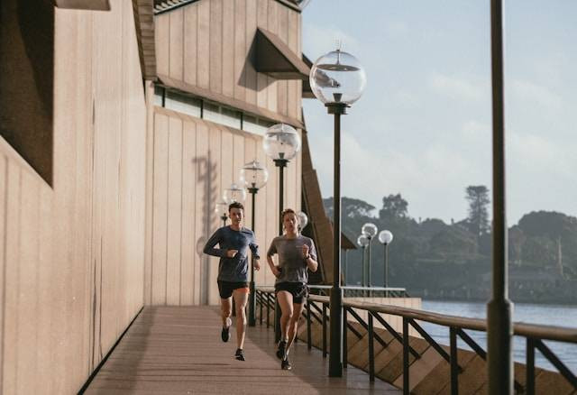

5 Rekomendasi Jenis Olahraga untuk Pemula yang Murah Meriah
Sports Club
Thursday, 1 Aug 2024 22:31 WIB

Olahraga merupakan salah satu kebutuhan yang harus dilakukan agar tubuh tetap sehat dan bugar.
Sebenarnya esensi dari olahraga adalah manfaat yang diberikan kepada tubuh. Jadi, tidak harus selalu mengeluarkan banyak uang untuk berolahraga.
Apalagi ada beberapa rekomendasi jenis olahraga untuk pemula yang murah meriah. Simak selengkapnya di sini.
5 Rekomendasi Jenis Olahraga untuk Pemula yang Murah Meriah, Cocok Dilakukan Sehari-hari
Dikutip dari buku Psikologi Olahraga karya Dian Permana dkk., (2021) olahraga memiliki banyak manfaat untuk tubuh.
Salah satu manfaat olahraga adalah menurunkan kolesterol dan juga bisa mengontrol kadar gula darah dalam tubuh.
Hal tersebut memberikan efek yang signifikan untuk tubuh manusia.
Oleh sebab itu olahraga harus menjadi kebiasaan semua orang.
Untuk memulai gaya hidup sehat dan aktif tidak harus mahal.
Banyak jenis olahraga yang murah meriah dan mudah dilakukan, baik di luar ruangan maupun di rumah.
Berikut adalah rekomendasi jenis olahraga untuk pemula yang murah meriah.
1. Jalan Kaki
Jenis olahraga pertama yang bisa dicoba dan murah meriah adalah jalan kaki.
Jalan kaki adalah salah satu bentuk olahraga paling sederhana dan mudah dilakukan.
Olahraga ini hanya perlu sepatu yang nyaman dan ruang untuk berjalan.
Jalan kaki selama 30 menit setiap hari dapat membantu meningkatkan kesehatan jantung, membakar kalori, dan meningkatkan mood.
2. Lari
Lari adalah pilihan yang lebih intens daripada jalan kaki, dan menawarkan manfaat yang sama.
Anda dapat berlari di luar ruangan, di treadmill, atau bahkan di tempat.
Pastikan untuk memulai dengan perlahan dan meningkatkan jarak dan intensitas secara bertahap.
3. Senam Aerobik
Senam aerobik adalah cara yang menyenangkan untuk membakar kalori dan meningkatkan kebugaran kardiovaskular.
Banyak video senam aerobik gratis yang tersedia online, sehingga dapat berolahraga di rumah tanpa harus pergi ke gym.
4. Yoga
Yoga adalah latihan yang menggabungkan gerakan fisik, pernapasan, dan meditasi.
Yoga dapat membantu meningkatkan fleksibilitas, kekuatan, keseimbangan, dan ketenangan pikiran.
Banyak kelas yoga gratis atau murah tersedia di komunitas lokal atau online.
5. Bersepeda
Bersepeda adalah cara yang menyenangkan untuk menjelajahi lingkungan dan mendapatkan latihan yang baik.
Anda dapat bersepeda di jalan raya, di jalur khusus sepeda, atau bahkan di taman.
Itulah beberapa jenis olahraga untuk pemula yang murah meriah dan cocok dilakukan sehari-hari.
Comments
Comments List
No comments yet. Be the first to post a comment!